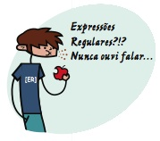
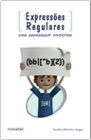

AVISO: Há uma edição mais recente deste livro.
Ficha
| Título: | Expressões Regulares - Uma abordagem divertida |
| Autor: | Aurelio Marinho Jargas (site, blog, twitter) |
| Editora: | Novatec |
| Edição: | 4ª |
| Ano: | 2012 |
| Páginas: | 224 |
| Formato: | 16×23 cm |
| Peso: | ? gramas |
| Encadernação: | brochura |
| Idioma: | Português |
| Lançamento: | 7 de novembro de 2012 (preparativos, anúncio e pré-venda autografada) |
| ISBN: | 978-85-7522-337-6 |
| Preço: | R$ 49,00 |
Resenha

As Expressões Regulares podem ser utilizadas em editores de texto, planilhas, bancos de dados e linguagens de programação, em sistemas Unix, Linux, Windows e Mac. Qualquer usuário de computador pode usufruir dos seus benefícios. Profissionais que manipulam texto e dados economizarão horas de serviço braçal: escritores, revisores, tradutores, programadores e administradores de sistema.
Em uma abordagem incomum de encontrar em livros técnicos, as explicações didáticas e divertidas tornam prazerosa a leitura de um tema tão árido e abstrato. É uma conversa entre amigos, partindo do básico até chegar aos conceitos avançados. Esta obra revela aos poucos o poder das expressões e o leitor irá saborear o assunto descobrindo seus segredos descontraidamente.
Esta 4ª edição, além de correções e atualizações, traz tópicos novos que ensinam como utilizar as expressões regulares nas fórmulas das planilhas do Google Docs e OpenOffice/LibreOffice, no servidor web Apache (e seu temido mod_rewrite), e no comando find do UNIX. Foram reescritos os tópicos sobre as linguagens de programação JavaScript e Python, agora trazendo uma referência completa, recheada de exemplos, tratando inclusive de assuntos avançados como substituição usando funções e grupos nomeados.
Saiba mais em www.piazinho.com.br.
Download (PDF)
- Sumário
- A lista completa dos tópicos abordados no livro.
- Capítulo 1 (completo) e Capítulo 2 (parcial)
- Baixe o trecho inicial do livro, para você experimentar a leitura fácil e divertida, que ensina expressões regulares de maneira indolor. Saboreie, aproveite. Mas cuidado: depois de começar, será difícil parar :)
- Apêndice B – Tabelas
- No final do livro, há um apêndice com várias tabelas, que resumem vários conceitos ensinados no livro. É um guia de consulta rápida (cheat sheet), muito útil para aqueles momentos de dúvida na hora de usar as expressões. Preparei esta versão especial em PDF, juntando todas as tabelas em uma única página A4. Boa para imprimir e/ou salvar em seu smartphone. Aproveite!
Exemplos interativos
Que tal ir testando os exemplos do livro durante a leitura?
 |
| Clique aqui para usar os exemplos interativos |
Esta ferramenta, criada especialmente para o livro, interpreta expressões regulares em tempo real e mostra na tela o resultado. Ela possui cadastrados todos os exemplos do livro, juntamente com o número da página em que eles se encontram. Assim, o leitor pode testar cada exemplo, fazer variações, mudar a expressão, experimentar textos diferentes, enfim, fixar o aprendizado na prática.
Novidades da 4ª edição
- Planilhas do Google Docs (novo)
- Você já deve conhecer as planilhas do Google Docs (agora chamado de Google Drive). Mas você sabia que pode usar expressões regulares para fazer pesquisas e substituições no conteúdo das células? É muito prático, o livro te ensinará os detalhes. Melhor ainda, você também aprenderá como turbinar suas fórmulas com as três funções novas que o Google criou especificamente para usar com as expressões: REGEXMATCH, REGEXREPLACE e REGEXEXTRACT.
- Planilhas do OpenOffice/LibreOffice (novo)
- Você aprenderá como usar as expressões regulares no Calc, em todos os lugares onde elas são aceitas: no painel Localizar e substituir, nos filtros e em várias funções usadas em fórmulas. São ao todo 19 funções que suportam as expressões, entre elas SUMIF, COUNTIF, MATCH e LOOKUP.
- Servidor web Apache (novo)
- Já teve pesadelos com o temido mod_rewrite? Eu também. Aprenda a fazer expressões certeiras, evitando pegadinhas com PATH e retrovisores. Mas este módulo é apenas um pedaço de um total de 28 diretivas (!) do Apache que suportam expressões regulares, entre elas: If, RedirectMatch, FilesMatch, LocationMatch e a inusitada Substitute, que "faz um sed" no conteúdo das páginas do servidor. São ao todo 10 páginas do livro dedicadas a desvendar os segredos das expressões no Apache, didaticamente.
- Comando find - UNIX (novo)
- Use expressões regulares no comando find para encontrar rapidamente arquivos e pastas pelo nome. Mas não ache que será fácil! Além de algumas pegadinhas com a ordem das opções, e diferenças entre as versões GNU e BSD, existem sete (!) tipos de expressões regulares para você escolher. Para que simplificar, não é mesmo? :)
- Python (reescrito)
- Python é minha linguagem preferida e agora ela teve o destaque que merece no livro: este tópico foi reescrito e pulou de 2.5 para 9 páginas. Agora é uma referência completa, recheada de exemplos, tratando inclusive de assuntos avançados como flags, textos multilinha, grupos nomeados, expressões comentadas e substituição usando função. É como um minilivro dentro do livro.
- JavaScript (reescrito)
- JavaScript disputa com Shell Script o segundo lugar entre minhas linguagens preferidas, então também dei-lhe um tratamento especial nesta edição. O tópico foi reescrito e expandido, agora explicando em detalhes como usar o objeto RegExp e extrair dados do casamento. Também há exemplos didáticos para tópicos avançados como: textos multilinha e substituição usando função.
- Editor de textos do Google Docs (removido)
- Em 2010 o editor de textos do Google foi reformulado e infelizmente o suporte às expressões regulares foi removido.
- 10 anos de Expressões Regulares (removido)
- A edição anterior era comemorativa e trazia um texto longo (13 páginas) que contava minha história de uma década com as expressões e mostrava os bastidores da escrita do livro. Este texto foi removido do livro e colocado aqui no site.
Comparativo
|  |  |
 |
 |
|
|---|---|---|---|---|
| 1ª edição | 2ª edição | 3ª edição | 4ª edição | |
| Ano: | 2006 | 2008 | 2009 | 2012 |
| Páginas: | 144 | 168 | 208 | 224 |
| Formato: | 14×21 cm | 16×23 cm | 16×23 cm | 16×23 cm |
| Editores: | Emacs Vim Word OpenOffice |
Emacs Vim Word OpenOffice |
Emacs Vim Word OpenOffice Google Docs |
Emacs Vim Word OpenOffice |
| Planilhas: | - | - | - | Google Docs OpenOffice |
| Aplicativos: | - | Grep | Grep | Grep Apache HTTPd Find |
| Databases: | - | MySQL PostgreSQL |
MySQL PostgreSQL Oracle SQLite |
MySQL PostgreSQL Oracle SQLite |
| Linguagens: | Awk JavaScript Perl PHP Python Sed Tcl VBscript C Java Ruby |
Awk JavaScript Perl PHP Python Sed Tcl VBscript C Java Ruby ActionScript PHP PCRE Shell Script |
Awk JavaScript Perl PHP Python Sed Tcl VBscript C Java Ruby ActionScript PHP PCRE Shell Script HTML5 Lua .NET (VB, C#) |
Awk JavaScript Perl PHP Python Sed Tcl VBscript C Java Ruby ActionScript PHP PCRE Shell Script HTML5 Lua .NET (VB, C#) |
Bastidores
Eu gosto de compartilhar os bastidores dos trabalhos que faço, para quem está na escuta saber como funcionam as coisas, e, quem sabe, se animar a produzir também. Com os livros não é diferente.
Durante a escrita do desta nova edição livro, escrevi "diários" no Facebook, contando sobre cada novo tópico que eu terminava de escrever. Também tagarelei muito no twitter ao mesmo tempo que escrevia, compartilhando em tempo real as aventuras da rotina de escritor :)
Veja também dois relatos sobre o livro, que fiz em meu blog: Piazinho 4 – A missão e Rotina de escritor.
Comprar
Você é colecionador e quer comprar essa edição antiga do livro?
Essa edição está esgotada, porém, às vezes, algumas livrarias ainda possuem um último exemplar em estoque. Veja se aparece alguma oferta nestes sites: BuscaPé, BondFaro.
Dica: Para evitar transtornos, entre em contato com a livraria e pergunte se o livro realmente existe no estoque deles.
Se você procura a edição mais recente desse livro, clique aqui.
« Voltar para a página principal